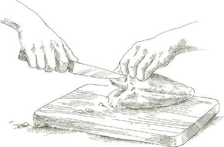

ЯКБЫ ЭТО БЫЛО натюрморт, его название могло бы быть «Курица с двумя лимонами». Это все, что в нем есть. Никакого жира для приготовления, никакого полива, никакой начинки, никаких приправ, кроме соли и перца. После того как вы положите курицу в духовку, переверните ее всего один раз. Птица, ее два лимона и духовка сделают все остальное. Снова и снова, на протяжении лет, я встречаю людей, которые подходят ко мне и говорят: «Я приготовила вашу курицу с двумя лимонами, и это самый удивительно простой рецепт, самая сочная, вкуснейшая курица, которую я когда-либо пробовала». И вы знаете, это совершенно верно.
На 4 порции
Курица весом от 1от .4 до 1.8 кг (3-4 фунта)
Соль
Черный перец, свежемолотый
2 довольно маленьких лимона
1. Разогрейте духовку до 175°C (350°F).
2. Тщательно промойте курицу в холодной воде, как внутри, так и снаружи. Удалите все свисающие кусочки жира. Дайте птице постоять около 10 минут на слегка наклонной тарелке, чтобы вся вода стекла. Хорошо вытрите ее насухо с помощью ткани или бумажных полотенец.
3. Посыпьте курицу щедрым количеством соли и черного перца, втирая их пальцами по всему телу и в полость.
4. Промойте лимоны в холодной воде и высушите их полотенцем. Размягчите каждый лимон, положив его на стол и прокатывая его вперед и назад, оказывая при этом сильное давление ладонью. Проколите лимоны как минимум в 20 местах каждый, используя прочную круглую зубочистку, иглу для связывания, острое вилку или аналогичный инструмент.
5. Поместите оба лимона в полость птицы. Закройте отверстие зубочистками или иглой для связывания и ниткой. Закройте его хорошо, но не делайте абсолютно герметичным, потому что курица может лопнуть. Протяните кухонную нитку от одной ноги к другой, завязывая ее на обоих суставах. Оставьте ноги в их естественном положении, не натягивая их. Если кожа не повреждена, курица раздуется во время приготовления, а нитка служит только для того, чтобы удерживать бедра от расхождения и разрыва кожи.
6. Положите курицу в жаровню, грудкой вниз. Не добавляйте никакого жира для жарки. Эта птица сама себя поливает, так что не беспокойтесь о том, что она прилипнет к сковороде. Поместите ее в верхнюю треть разогретой духовки. Через 30 минут переверните курицу, чтобы грудка была сверху. При переворачивании старайтесь не проколоть кожу. Если кожа останется целой, курица надуется, как шарик, что создаст эффектную подачу на стол позже. Однако не беспокойтесь слишком сильно об этом, потому что даже если она не надуется, вкус не пострадает.
7. Готовьте еще 30-35 минут, затем увеличьте температуру духовки до 200°C (400°F) и готовьте еще 20 минут. Рассчитывайте от 2от 0 до 25 минут общего времени приготовления на каждый фунт. Нет необходимости снова переворачивать курицу.
8. Независимо от того, надулась ли ваша птица или нет, подавайте ее на стол целиком и оставьте лимоны внутри, пока она не будет нарезана и открыта. Соки, которые вытекут, будут очень вкусными. Обязательно полейте ими кусочки курицы. Лимоны уменьшатся в размере, но все еще будут содержать немного сока; не выжимайте их, они могут брызнуть.
Заметка заранее  Если вы хотите съесть курицу, пока она теплая, планируйте подавать ее сразу после того, как она выйдет из духовки. Если останется, она будет очень вкусной и холодной, сохранив свою влажность благодаря некоторым сокам от приготовления, и ешьте не прямо из холодильника, а при комнатной температуре.
Если вы хотите съесть курицу, пока она теплая, планируйте подавать ее сразу после того, как она выйдет из духовки. Если останется, она будет очень вкусной и холодной, сохранив свою влажность благодаря некоторым сокам от приготовления, и ешьте не прямо из холодильника, а при комнатной температуре.
На 4 порции
Курица весом 1.6 кг (3½ фунта)
2 веточки свежего розмарина ИЛИ 1 полная чайная ложка сушеных листьев
3 зубчика чеснока, очищенных
Соль
Черный перец, свежемолотый
2 столовые ложки растительного масла
1. Разогрейте духовку до 190°C (375°F).
2. Промойте курицу внутри и снаружи холодной водой и тщательно обсушите с помощью ткани или бумажных полотенец.
3. Положите одну из свежих веточек розмарина или половину сушеных листьев внутрь полости птицы вместе со всеми зубчиками чеснока, солью и перцем.
4. Натрите 1 столовую ложку масла на кожу курицы и посыпьте солью и перцем. Снимите листья с оставшейся веточки розмарина и посыпьте ими птицу или посыпьте оставшиеся сушеные листья. Положите курицу вместе с оставшейся столовой ложкой масла в жаровню и поместите ее на среднюю полку предварительно разогретой духовки. Каждые 15 минут переворачивайте и поливайте жиром и соками, которые собираются в форме. Готовьте, пока бедро не станет очень мягким при нажатии вилкой, а мясо легко отделится от кости, около 1 часа или более.
5. Переложите курицу на теплое блюдо для подачи. Наклоните жаровню и снимите весь жир, кроме небольшого количества. Поставьте сковороду на плиту, включите высокий огонь, добавьте 2 столовые ложки воды и, пока она кипит, используйте деревянную ложку, чтобы скрести остатки пищи, прилипшие ко дну. Вылейте соки из сковороды на курицу и подавайте немедленно.
На 4 порции
1 столовая ложка сливочного масла
2 столовые ложки растительного масла
Курица весом 1.5 кг, разрезанная на 4 части
2 или 3 зубчика чеснока, очищенных
1 веточка свежего розмарина, сломанная пополам ИЛИ ½ чайной ложки сушеных листьев розмарина
Соль
Черный перец, свежемолотый
½ чашки сухого белого вина
1. Положите масло и оливковое масло в сковороду, включите средний огонь, и когда пена от масла начнет утихать, положите куриные четверти, кожей вниз.
2. Хорошо обжарьте курицу с обеих сторон, затем добавьте чеснок и розмарин. Готовьте чеснок, пока он не станет светло-золотистым, и добавьте соль, перец и вино. Дайте вину быстро покипеть около 30 секунд, затем уменьшите огонь до медленного кипения и накройте сковороду крышкой, оставив ее немного приоткрытой. Готовьте, пока бедро курицы не станет очень нежным при нажатии вилкой, и мясо легко отделится от кости, рассчитывая от 2от 0 до 25 минут на фунт. Если во время приготовления курицы вы заметите, что жидкости в сковороде стало недостаточно, добавьте 1 или 2 столовые ложки воды по мере необходимости.
3. Когда курица будет готова, перенесите ее на теплую сервировочную тарелку, используя шумовку или лопатку. Удалите чеснок из сковороды. Наклоните сковороду, слив все, кроме небольшого количества жира. Увеличьте огонь до максимума и выпарите воду, освобождая остатки от приготовления с дна и стенок деревянной ложкой. Полейте курицу соками из сковороды и подавайте немедленно.
Каччаторе означает «по-охотничьи», и поскольку в каждой итальянской семье всегда был охотник, каждая итальянская хозяйка готовит блюдо, которое можно отнести к этому описанию. Учитывая множество вариаций блюд, которые носят название каччаторе, в общем они представляют собой фрикасе из курицы или кролика с томатами, луком и другими овощами. И именно это мы и готовим.
На 4-6 порций
Курица весом от 1от .3 до 1.8 кг, нарезанная на 6-8 частей
2 столовые ложки растительного масла
Мука, выложенная на тарелку
Соль
Черный перец, свежемолотый
⅓ чашки лука, нарезанного очень тонко
⅔ чашки сухого белого вина
1 сладкий желтый или красный перец, очищенный от семян и нарезанный тонкой соломкой
1 морковь, очищенная и нарезанная тонкими кружочками
½ стебля сельдерея, нарезанного тонкими кружочками
1 зубчик чеснока, очищенный и очень мелко нарезанный
⅔ чашки консервированных итальянских сливов, нарезанных крупно, с соком
1. Промойте курицу в холодной воде и тщательно обсушите с помощью ткани или бумажных полотенец.
2. Выберите сковороду, в которую поместятся все куски курицы без скученности. Влейте масло и включите средний огонь. Когда масло нагреется, обваляйте курицу в муке, покройте куски со всех сторон, стряхните излишки муки и положите их в сковороду кожей вниз. Хорошо подрумяньте эту сторону, затем переверните и подрумяньте другую сторону. Переложите их на теплую тарелку и посыпьте солью и перцем.
3. Увеличьте огонь до среднего, добавьте нарезанный лук и готовьте лук до глубокого золотистого цвета. Влейте вино. Дайте ему покипеть около 30 секунд, используя деревянную ложку, чтобы отскоблить подгоревшие остатки на дне и стенках сковороды. Верните подрумяненные куски курицы в сковороду, кроме грудок, которые готовятся быстрее и будут добавлены позже. Добавьте болгарский перец, морковь, сельдерей, чеснок и нарезанные помидоры с соком. Отрегулируйте огонь, чтобы готовить на медленном кипении, и накройте сковороду крышкой. Через 40 минут добавьте грудки и продолжайте готовить еще как минимум 10 минут, пока куриные бедра не станут очень нежными при нажатии вилкой, а мясо легко отделится от кости. Переворачивайте и поливайте куски курицы время от времени во время готовки.
4. Когда курица готова, переложите ее на теплое блюдо для подачи, используя шумовку или лопатку. Если содержимое сковороды слишком жидкое, увеличьте огонь под открытой сковородой и уменьшите до желаемой густоты. Полейте содержимым сковороды курицу и подавайте немедленно.
Заметка заранее Блюдо можно приготовить заранее, за день до подачи. Дайте курице полностью остыть в соках перед тем, как убрать в холодильник. Разогрейте в накрытой сковороде на медленном огне, переворачивая куски курицы, пока они не прогреются полностью.
ДАННЫЙ ПОДХОД к стилю качиаторе еще проще, чем предыдущий. Здесь меньше вина, нет муки и нет других овощей, кроме помидоров и лука, которые в этой версии присутствуют в более заметных пропорциях, придавая курице более сладкий, фруктовый вкус, несколько напоминающий очень свежий томатный соус. Также обратите внимание, что здесь оливковое масло заменяет растительное масло.
На 4-6 порций
Курица весом от 1от ,5 до 2 килограммов, нарезанная на 6-8 частей
2 столовые ложки оливкового масла первого холодного отжима
1 чашка лука, нарезанного очень тонко
2 зубчика чеснока, очищенные и нарезанные очень тонко
Соль
Черный перец, свежемолотый
⅓ чашки сухого белого вина
1½ чашки свежих, очень спелых, мясистых помидоров, очищенных сырыми с помощью овощечистки и нарезанных, ИЛИ консервированных импортных итальянских помидоров «сливка», нарезанных, с соком
1. Вымойте курицу в холодной воде и тщательно обсушите с помощью ткани или бумажных полотенец.
2. Выберите сковороду, которая сможет вместить все куски курицы без переполнения. Вылейте оливковое масло и добавьте нарезанный лук, включите средний огонь. Готовьте лук, периодически помешивая, пока он не станет прозрачным.
3. Добавьте нарезанный чеснок и куски курицы, укладывая их кожей вниз. Готовьте, пока кожа не образует золотистую корочку, затем переверните куски и обжарьте с другой стороны.
4. Добавьте соль и несколько щепоток перца, переверните куски курицы 2-3 раза. Добавьте вино и дайте ему выпариться, пока не останется примерно половина.
5. Добавьте нарезанные помидоры, уменьшите огонь до слабого кипения и накройте сковороду, слегка приоткрыв крышку. Переворачивайте и поливайте куски курицы время от времени во время приготовления. Если вы заметите, что жидкости в сковороде недостаточно, добавьте 2 столовые ложки воды. Готовьте, пока куриные бедра не станут очень мягкими при нажатии вилкой, а мясо легко отделялось от кости, примерно 40 минут.
Заранее Рекомендации из предыдущего рецепта качиатора применимы и здесь.
На 4 порции
Курица весом 1,5 кг, нарезанная на 4 части
2 столовые ложки растительного масла
Соль
Чёрный перец, свежемолотый
120 мл сухого белого вина
Небольшая упаковка ИЛИ 28 г сушеных грибов порчини, восстановленных как описано и нарезанных
Фильтрованная вода от замачивания грибов, см. инструкции
60 мл консервированных импортных итальянских сливовидных помидоров, грубо нарезанных, с соком
1 столовая ложка масла
1. Вымойте курицу в холодной воде и тщательно обсушите с помощью ткани или бумажных полотенец.
2. Положите масло в сковороду, включите средний огонь, и когда масло станет очень горячим, положите куски курицы кожей вниз. Хорошо обжарьте с этой стороны, затем переверните и обжарьте с другой стороны. Посолите и поперчите, переверните один раз, затем добавьте вино. Дайте вину кипеть в течение 30 секунд, пока вы соскребаете подгоревшие остатки со дна и стенок сковороды деревянной ложкой.
3. Добавьте нарезанные восстанавливаемые порчини, отфильтрованную воду от их замачивания и нарезанные помидоры с соком. Перемешайте все ингредиенты, затем отрегулируйте огонь, чтобы готовить на медленном кипении, и накройте кастрюлю крышкой, немного приоткрытой. Готовьте, пока бедра птицы не станут очень нежными при нажатии вилкой, а мясо легко отделится от кости, около 50 минут. Переворачивайте куски курицы время от времени во время приготовления.
4. Когда курица будет готова, перенесите её на теплую сервировочную тарелку. Наклоните сковороду и ложкой снимите весь жир, кроме небольшого количества. Если соки в сковороде слишком жидкие, уварите их на сильном огне. Вмешайте в них 1 столовую ложку масла, затем вылейте все содержимое сковороды на курицу и подавайте немедленно.
В ЭТОМ ФРИКАСЕ куски курицы готовятся, укрытые красной капустой, которая сохраняет их нежными и придаёт им немного своей сладости. К моменту готовности курицы капуста растворяется в густом, липком соусе.
На 4 порции
1 чашка лука, нарезанного очень тонко
¼ чашки оливкового масла первого холодного отжима плюс 1 столовая ложка
2 зубчика чеснока, очищенных и каждый нарезанный на 4 части
4 чашки красной капусты, мелко нашинкованной, около 1 фунта (450 г)
Курица весом 3–4 фунтов (от 1от .4 до 1.8 кг), нарезанная на 8 частей
½ чашки сухого красного вина
Черный перец, свежемолотый
Соль
1. Положите нарезанный лук, ¼ чашки масла и чеснок в сковороду, включите средний огонь и готовьте чеснок, пока он не станет глубокого золотистого цвета. Добавьте нашинкованную капусту. Тщательно перемешайте, чтобы она хорошо покрылась, посыпьте солью, снова перемешайте, отрегулируйте огонь для медленного кипения и накройте сковороду крышкой. Готовьте капусту в течение 40 минут или более, периодически переворачивая, пока она не станет очень мягкой и значительно не уменьшится в объеме.
2. Промойте куски курицы в холодной воде и тщательно высушите их с помощью ткани или бумажных полотенец.
3. В другой сковороде налейте 1 столовую ложку оливкового масла, включите средний огонь и, после того как масло немного нагреется, положите все куски курицы кожей вниз в один слой. Через некоторое время переверните курицу, чтобы подрумянить куски с обеих сторон, затем переложите их в другую сковороду, за исключением грудки, которую вы отложите до позже. Переверните курицу в капусте, добавьте вино и несколько щепоток перца, накройте сковороду, оставив крышку немного приоткрытой, и продолжайте готовить на медленном, устойчивом кипении. Периодически переворачивайте куски курицы, посыпая их один раз солью. Через 40 минут добавьте грудки. Готовьте еще около 10 минут, пока курица не станет мягкой до самого центра и мясо легко не отделится от кости. Вы больше не сможете узнать капусту как таковую; она превратится в темный, эластичный соус для курицы. Переложите все содержимое сковороды на теплое блюдо и подавайте немедленно.
Примечание заранее Блюдо можно подготовить до этого момента даже за 2 или 3 дня заранее. Полностью разогрейте в закрытой сковороде перед тем, как перейти к следующему шагу.
На 4 порции
Курица весом от 1от .4 до 1.8 кг, нарезанная на 8 частей
2 столовые ложки растительного масла
1 столовая ложка сливочного масла
1 веточка свежего розмарина ИЛИ 1 чайная ложка сушеных листьев
3 зубчика чеснока, очищенных
Соль
Черный перец, свежемолотый
⅓ чашки сухого белого вина
2 столовые ложки свежевыжатого лимонного сока
Цедра лимона без белой мякоти, нарезанная на 6 тонких полосок
1. Вымойте куски курицы в холодной воде и тщательно обсушите их с помощью ткани или бумажных полотенец.
2. Выберите сковороду, которая сможет вместить все куски курицы без наложения. Влейте масло и добавьте сливочное масло, включите средний огонь, и когда пена от масла начнет утихать, положите курицу кожей вниз. Обжарьте курицу с обеих сторон, затем добавьте розмарин, чеснок, соль и перец. Готовьте 2-3 минуты, периодически переворачивая куски курицы, затем уберите грудку и отложите в сторону.
3. Добавьте вино, дайте ему закипеть на сильном огне около 20 секунд, затем уменьшите огонь до очень медленного кипения и накройте сковороду крышкой, оставив ее немного приоткрытой. Через 40 минут верните грудку обратно в сковороду. Готовьте еще как минимум 10 минут, пока бедра курицы не станут очень мягкими при прокалывании вилкой, и мясо легко отделится от кости. Во время приготовления время от времени проверяйте уровень жидкости в кастрюле. Если ее станет недостаточно, добавьте 2-3 столовые ложки воды.
4. Когда курица будет готова, снимите с огня и перенесите куски на теплую сервировочную тарелку, используя шумовку или лопатку. Наклоните сковороду и слейте весь жир, оставив немного. Добавьте лимонный сок и цедру лимона, поставьте сковороду на средне-низкий огонь и используйте деревянную ложку, чтобы скрести остатки от приготовления с дна и стенок. Полейте курицу соком из сковороды и подавайте немедленно.
КАК И БАРАНИНИНЫЕ РЕБРЫШКИ в этом рецепте, эта курица готовится, а затем смешивается с сырой смесью взбитых яичных желтков и лимонного сока, который тепло мяса захватывает, образуя липкий, сатиновый слой.
На 4 порции
Курица весом от 1от .4 до 1.8 кг, нарезанная на 8 частей
4 столовые ложки (½ палочки) сливочного масла
3 столовые ложки очень мелко нарезанного лука
Соль
Черный перец, свежемолотый
1 чашка основного домашнего мясного бульона, приготовленного по инструкции, ИЛИ 1 кубик бульона, растворенный в 1 чашке воды
2 яичных желтка (см. предупреждение о сальмонеллезе)
¼ чашки свежевыжатого лимонного сока
1. Промойте куски курицы в холодной воде и тщательно обсушите их с помощью ткани или бумажных полотенец.
2. Выберите сковороду для обжаривания, в которую позже поместятся все куски курицы без наложения. Положите масло и нарезанный лук, включите средний огонь и готовьте лук, пока он не станет светло-золотистым. Увеличьте огонь немного и положите курицу кожей вниз. Обжарьте куски с обеих сторон до золотистой корочки.
3. Добавьте соль и перец, переверните куски курицы, затем уберите грудки из сковороды. Добавьте весь бульон, отрегулируйте огонь, чтобы готовить на очень слабом кипении, и накройте сковороду крышкой, оставив ее немного приоткрытой. Через 40 минут верните грудки в сковороду и готовьте еще как минимум 10 минут, пока бедра не станут очень мягкими при нажатии вилкой, и мясо легко отделится от кости. В процессе готовки время от времени переворачивайте курицу. Если бульона станет недостаточно, добавьте 2 или 3 столовые ложки воды по мере необходимости. Когда курица будет готова, жидкости в сковороде не должно остаться. Если вы обнаружите водянистые соки в сковороде, откройте крышку, увеличьте огонь до максимума и выпарите их, часто переворачивая куски курицы.
4. Положите яичные желтки в небольшую миску и слегка взбейте их вилкой или венчиком, постепенно добавляя лимонный сок. Вылейте смесь на куски курицы, тщательно перемешивая, чтобы они покрылись соусом. Переложите все содержимое сковороды на теплое блюдо и подавайте немедленно.

В РОМЕ эту курицу называют курицей дьявола из-за дьявольского количества молотого черного перца, который используется. На самом деле, хотя она действительно острая, ее наиболее заметное качество — это аромат, смесь запахов гриля, черного перца и лимона.
Для этого приготовления курицу необходимо разрезать и отбить. Мясник может легко это сделать, но вы тоже можете, следуя инструкциям в рецепте. Перед тем как готовить на гриле, курицу нужно натереть перцем и замариновать как минимум на 2 часа в лимонном соке и оливковом масле. Это идеальное блюдо для пикника, потому что вы можете подготовить курицу на кухне, положить ее с маринадом в один из тех пластиковых пакетов с герметичной застежкой и взять с собой. К тому времени, когда ваш огонь будет готов позже в течение дня, курица тоже будет готова.
На 4-6 порций
Курица весом 1.5 кг
1 столовая ложка черного перца горошком
⅓ чашки свежевыжатого лимонного сока
2 столовые ложки оливкового масла первого холодного отжима
ПО ЖЕЛАНИЮ: угольный или дровяной гриль
Соль
1. Курица должна быть расплющена вами или мясником в форме, которая будет больше похожа на бабочку, чем на птицу. Если вы делаете это сами, положите курицу на рабочую поверхность грудкой вниз. С помощью топора или ножа для нарезки разрежьте ее вдоль всего позвоночника. Поломайте грудную кость сзади, расправляя курицу так плоско, как сможете, руками. Переверните ее грудкой к себе. Сделайте надрезы в местах соединения крыльев и ног с телом, не отрывая их, но для того, чтобы расправить их в стороны. Переверните курицу снова, грудкой вниз, и отбейте ее так плоско, как сможете, используя мясной молоток или плоскую сторону топора.
2. Заверните перец в полотенце и расколите его молотком, мясным молотком или молотком. Если у вас есть мельница, которая может расколоть перец очень грубо, вы можете использовать ее вместо этого. Положите курицу в глубокую посуду и втирайте в нее расколотый перец, покрывая как можно больше. Полейте лимонным соком и оливковым маслом, и оставьте настаиваться на 2-3 часа, переворачивая и поливая время от времени.
3. Если вы готовите курицу в внутреннем гриле, разогрейте его как минимум за 15 минут до начала. Если используете угли, разожгите их заранее, чтобы образовалась корка из белой золы; если используете дрова, сделайте это заранее, чтобы получить значительное количество углей.
4. Посыпьте курицу солью и положите ее на решетку для гриля, если готовите внутри, или на гриль, если готовите на улице, с кожей, обращенной к источнику тепла. Готовьте, пока кожа не станет коричневой, затем полейте немного маринада и переверните. Переворачивайте птицу время от времени, пока она полностью не приготовится. Бедро должно быть очень нежным при прокалывании вилкой. Время приготовления значительно варьируется в зависимости от интенсивности огня и самой курицы. Если у вас закончится жидкость от маринада до того, как курица будет готова, полейте ее свежим оливковым маслом. Когда она будет готова, посыпьте свежезаколотым перцем и подавайте немедленно.
Грудка курицы имеет нежную текстуру и тонкий, мягкий вкус, сравнимый с телятиной скалоппине. Скалоппине отбиваются тонко, чтобы обеспечить наиболее быстрое приготовление; филе курицы слишком хрупкое, чтобы его отбивать, но его можно превратить в кусочки, похожие на скалоппине, нарезая. Когда вы используете описанный здесь метод, грудки курицы могут стать недорогой, но не менее изысканной альтернативой телятине, адаптируемой к многочисленным способам приготовления скалоппине.
1. Грудка курицы продается, покрытая двумя слоями кожи: жирным, желтым наружным и очень тонким, мембраноподобным внутренним. Когда вы уберете их пальцами, вы найдете их прикрепленными к грудной кости и к бокам грудки, где соединялась реберная клетка. Отрежьте их от обоих мест и выбросьте.

2. Проведите пальцем вдоль верхней части грудки, где когда-то крепилось крыло. Найдите отверстие. Вы найдете его, где кончик вашего пальца может войти без сопротивления: это пространство между двумя мышцами, одной большой и одной маленькой, которые лежат, одна над другой, и составляют каждую половину грудки. Вы должны отделить их, одну за другой. Сначала отделите большую мышцу, отрезая ее ножом от стороны грудки, которая прилегала к реберной клетке, затем отрезая ее от грудной кости. Повторите процедуру с меньшей мышцей, затем отделите другую половину грудки таким же образом. Теперь у вас есть два отдельных куска с каждой стороны грудки: один кусок плоский, большой и треугольный; другой меньший, круглый и сужающийся.
3. Меньший, сужающийся кусок имеет белый сухожилие, которое немного выступает с одного конца. Его нужно вытащить. Схватите выступающий кончик сухожилия, используя кусочек бумаги или уголок полотенца, потому что он скользкий. Другой рукой прижмите лезвие ножа к мышце рядом с сухожилием, наклоняя лезвие, чтобы не порезать. Прижимая ножом, потяните за сухожилие, которое легко выйдет. Удалите сухожилие из другой маленькой мышцы тем же способом. Больше ничего с этими кусками делать не нужно.

4. Положите большую мышцу на разделочную доску, с той стороной, которая была рядом с костью, вниз. Держите ее плоско ладонью одной руки. Другой рукой возьмите острый нож и нарежьте грудку, двигая лезвие параллельно разделочной доске, тем самым разделяя кусок на два равных слайса, половину его первоначальной толщины. Повторите процедуру с другой большой мышцей. Теперь у вас есть, из каждой целой грудки, шесть нежных филе, готовых к приготовлению.
Заранее: Вы можете подготовить филе за несколько часов или даже за день-два до приготовления. Заверните в пленку перед тем, как поставить в холодильник.

На 4-6 порций
2 зубчика чеснока
2 столовые ложки растительного масла
½ фунта (225 г) свиного фарша
Соль
Черный перец, свежемолотый
2 чайные ложки свежих листьев розмарина ИЛИ 1 чайная ложка сушеного
2 целые куриные грудки, филе как указано
2 столовые ложки сливочного масла
Прочные круглые зубочистки
½ чашки сухого белого вина
1. Легко разомните чеснок тяжелой ручкой ножа, достаточно сильно, чтобы треснула оболочка, которую вы удалите и выбросите. Положите чеснок на сковороду вместе с маслом, включите средний огонь и готовьте чеснок, пока он не приобретет светло-золотистый цвет. Добавьте фарш из свинины, соль, перец и листья розмарина. Готовьте около 10 минут, помешивая и разбивая мясо вилкой. Выбросьте чеснок и, используя шумовку или лопатку, переложите мясо на тарелку.
2. Выложите куриные филе на рабочую поверхность и посыпьте солью и перцем. Распределите свиной фарш по филе и плотно сверните каждое филе. Закрепите каждый рулетик зубочисткой, вставленной вдоль.
3. Слейте большую часть жира из сковороды, в которой вы готовили свинину. (Если вы сделали куриные рулетики заранее, обезжирьте сковороду в этот момент и сохраните соки в сковороде на случай, если вы будете готовы продолжить готовку.) Добавьте масло, включите средний огонь, и когда пена масла начнет утихать, положите куриные рулетики. Готовьте их недолго, около 1 минуты в общей сложности, переворачивая, чтобы подрумянить со всех сторон. Переложите на теплое блюдо для подачи, используя шумовку или лопатку, и удалите зубочистки.
4. Добавьте в сковороду вино и, пока оно быстро кипит около полминуты, используйте деревянную ложку, чтобы соскоблить остатки пищи со дна и стенок сковороды. Полейте куриные рулетики соками и подавайте немедленно.
Заметка заранее Рулетики можно подготовить до этого момента за несколько часов заранее.
На 4-6 порций
1 столовая ложка растительного масла
4 столовые ложки (½ пачки) сливочного масла
3 целых куриных грудки, филе как указано
Соль
Черный перец, свежемолотый
Сок, выжатый из 1 лимона
3 столовые ложки нарезанной петрушки
Для украшения: 1 лимон, нарезанный тонкими ломтиками
1. Положите масло и 3 столовые ложки сливочного масла на сковороду и включите средний огонь. Когда пена от масла утихнет, аккуратно положите столько куриных филе, сколько поместится. Обжарьте их с обеих сторон, менее 1 минуты в общей сложности. Переложите филе на теплую тарелку, используя шумовку или лопатку, и посыпьте солью и перцем. Повторите процедуру, пока все филе не будут готовы.
2. Добавьте лимонный сок в сковороду и дайте ему быстро закипеть на среднем огне в течение примерно 20 секунд, при этом соскребая остатки пищи со дна и стенок сковороды деревянной ложкой. Добавьте нарезанную петрушку и оставшуюся столовую ложку масла, быстро перемешайте в течение 4-5 секунд, затем уменьшите огонь до минимума и верните филе в сковороду вместе с любыми соками, которые они могли выделить на тарелке. Переверните их в соках 2-3 раза, затем переложите вместе с соками на теплое блюдо. Украсьте тонкими ломтиками лимона и подавайте немедленно.
Целая курица с удаленными костями является прекрасной естественной оболочкой для любой начинки. Принести ее к столу — это большое удовольствие: ее куриная форма менее угловата, более voluptuous, но цела — и нарезать из нее, без особых усилий, идеальные, плотные, безкостные ломтики.
Вам не будет ничего непонятного в обработке курицы. Оснащенные терпением, маленьким острым ножом и, конечно, курицей, вы сможете легко разобраться в этом самостоятельно. Почти вся туша птицы — позвоночник, ребра и грудная кость — удобно отделяется целиком, как только она будет ослаблена от мяса. Кости бедра и голени нужно удалять отдельно, и начинать нужно с них. Крылья не стоит трогать: их кости можно оставить на месте.
Будьте осторожны и никогда не режьте и не рвите кожу, кроме одного длинного разреза вдоль спины, который вы должны сделать, чтобы добраться до костей, и который позже зашьете. Кожа курицы удивительно прочная и эластичная, когда цела. Но любое повреждение приведет к образованию зияющей дыры. Чтобы нож не соскользнул и не проколол кожу, всегда поворачивайте лезвие от кожи к кости, с которой вы работаете.
Когда вы закончите обработку, перед вами окажется то, что выглядит как безнадежно запутанная и мягкая масса, которая ничем не напоминает курицу. Не паникуйте. Когда начинка займет место костей, птица заполнится во всех нужных местах и будет выглядеть абсолютно прекрасно.

1. Вам понадобится очень острый нож с коротким лезвием. Положите курицу грудкой вниз, лицом к рабочей поверхности, и сделайте один прямой разрез от шеи до хвоста, углубляясь достаточно, чтобы достать до позвоночника.
2. Обрабатывайте одну сторону птицы за раз. Начните с шеи, отделяя мясо от костей, поддевая его пальцами и, где необходимо, отрезая ножом. Всегда направляйте лезвие ножа к кости и от кожи. Продолжайте так, пока не дойдете до спины курицы.
3. Когда вы пройдете середину и будете приближаться к пояснице, вы найдете небольшую косточку в форме блюдца, заполненную мясом. Отделите мясо пальцами, отрезая его ножом, когда это необходимо. Дальше вы наткнетесь на тазобедренный сустав. Используйте пальцы, чтобы освободить как можно больше мяса вокруг него, затем отрежьте сустав от туши с помощью ножниц для птицы. Одной рукой держите конец куриной ноги, а другой — отодвигайте мясо от тазобедренной кости. Когда вы дойдете до длинных белых волокон — сухожилий — отрежьте их у кости ножом.
4. Следующий сустав, с которым вам нужно работать, соединяет тазобедренную кость с голенью. Держите тазобедренную кость в одной руке, голень — в другой, и сломайте тазобедренную кость в суставе. Теперь вы можете полностью удалить тазобедренную кость, используя нож, чтобы освободить ее от любого мяса, которое все еще к ней прикреплено. Каждый раз, когда нож в вашей руке, всегда думайте о коже, стараясь не порвать ее или проколоть.
5. Далее вам нужно удалить кость голени. Начните с толстой, мясистой части и отделите мясо от кости, отодвигая его пальцами, когда оно отходит, и отрезая ножом, когда это необходимо. Отрежьте сухожилия у кости, оставив их прикрепленными к мясу. Осторожно двигайтесь к узловой части голени, стараясь не порвать кожу. По мере того как вы продолжаете отодвигать мясо от кости, вы заметите, что эта часть курицы выворачивается наизнанку, как перчатка. Когда вы будете примерно в 1.25 см от узла голени, сделайте круговой разрез, прорезая кожу, мясо и сухожилия до самой кости. Схватите кость за узел и протолкните ее обратно через ногу, пока она не выйдет с другого конца.
6. Вернитесь к верхней части спины. Оттягивая пальцами и скребя ножом по кости, отделите мясо от ребер, двигаясь к грудине. Когда доберетесь до грудинной кости, оставьте кожу прикрепленной к гребню кости на данный момент.
7. Присоединенный к крылу вы найдете плечевую кость. Отделите мясо от нее, используя пальцы, когда это возможно, и нож, когда это необходимо, затем отсечите кость в суставе, где она соединяется с крылом, и удалите ее. Ножницами для птицы отрежьте конец крыла. Не беспокойтесь о том, чтобы удалить кости из той части крыла, которая все еще прикреплена к телу.
8. Обработайте другую сторону птицы, повторяя описанную выше процедуру, пока курица не будет прикреплена к своей тушке только на гребне грудинной кости.
9. Переверните курицу так, чтобы грудка была обращена к вам, а тушка лежала на столе. Поднимите две свободные стороны мяса птицы и поднимите их над тушкой, удерживая одной рукой. Ножом аккуратно отделите кожу от гребня грудинной кости. Вы должны быть здесь очень осторожны, потому что кожа очень тонкая, где она прикреплена к кости, и вы можете легко сделать надрез. Держите режущую кромку и кончик ножа направленными от кожи, скребя лезвием по поверхности кости. Когда вы полностью отделите мясо, выбросьте тушку. Ваша курица без костей готова к фаршировке.
Примечание заранее Вся операция по удалению костей может быть завершена за день до фаршировки курицы.
На 6 порций
⅔ чашки крошки, мягкой, без корки, нарезанной на кусочки по 1 дюйму (2.5 см)
½ чашки молока
1 фунт (450 г) говяжьего фарша, предпочтительно из лопатки
2 столовые ложки мелко нарезанной петрушки
½ чайной ложки мелко нарезанного чеснока
Соль
Черный перец, свежемолотый
⅔ чашки свеженатертого сыра пармиджано-реджано
Курица весом 3–4 фунтов (1350-1800 г), без костей как указано
Игла для связывания и нитка ИЛИ игла для штопки и прочная хлопковая нить
¼ чашки растительного масла
1 столовая ложка масла
½ чашки сухого белого вина
1. Положите нарезанный хлеб и молоко в глубокую тарелку и дайте хлебу настояться 10 или 15 минут.
2. Положите говяжий фарш, петрушку, чеснок, соль, перец и тертый пармезан в миску и тщательно перемешайте, пока ингредиенты не объединятся.
3. Аккуратно отожмите замоченный хлеб в руке, пока он больше не будет капать молоком. Добавьте в мясную смесь и мягко замесите руками, пока ингредиенты не объединятся в однородную массу.
4. Положите курицу, снятой кожей вниз, на рабочую поверхность. Используйте часть начинки, чтобы заполнить места в ногах, где были кости. Остальную часть смеси сформируйте в овальную массу примерно такой же длины , как курица. Положите ее в центр курицы и заверните кожу вокруг нее, полностью закрывая начинку. Один край кожи должен перекрывать другой примерно на 2.5 см. Сформируйте массу под кожей руками, чтобы вернуть курице как можно ближе к ее первоначальной форме.

5. Зашейте кожу, начиная с шеи и двигаясь вниз к хвосту. Используйте своего рода обметочный шов, обводя стежки по краю кожи. Не ожидайте, что у вас получится идеально аккуратная работа, когда дойдете до хвоста, но постарайтесь сделать все возможное, убедившись, что зашили все отверстия. Когда закончите, уберите иглу в безопасное место.
6. Выберите кастрюлю с толстым дном или эмалированную чугунную кастрюлю, которая сможет вместить курицу. Влейте масло и добавьте масло, включите средний огонь. Когда пена от масла начнет спадать, положите курицу швом вниз. Обжарьте ее со всех сторон, аккуратно переворачивая. Добавьте вино, и когда оно будет кипеть около 30 секунд, посыпьте солью и перцем, отрегулируйте огонь для очень медленного кипения и накройте кастрюлю крышкой, слегка приоткрыв. Рассчитайте примерно 20 минут на фунт фаршированной курицы для времени приготовления. Переворачивайте курицу время от времени во время готовки. Если жидкости для приготовления станет недостаточно, добавьте 1 или 2 столовые ложки воды по мере необходимости.
7. Переложите курицу на разделочную доску или большое блюдо, дайте ей немного отдохнуть.
8. Уберите все, кроме небольшого количества жира из кастрюли. Добавьте 1 или 2 столовые ложки воды, увеличьте огонь до максимума, и пока вода кипит, используйте деревянную ложку, чтобы соскоблить остатки готовки с дна и стенок. Перелейте сок из кастрюли в теплую соусницу или маленькую соусницу.
9. Нарежьте курицу на столе, начиная с шеи, делая тонкие ломтики. Полейте несколько капель теплого сока из кастрюли на каждый ломтик при подаче. Если подаете птицу холодной — при комнатной температуре, пропустите соки.

КЛАССИЧЕСКИЙ МЕТОД приготовления пернатой дичи сильно зависит от аромата свежего шалфея, как и этот рецепт. Также добавляет интенсивности вкуса печень птицы, которая фаршируется в полость. Птицы запекаются в неповторимом итальянском стиле, в частично накрытой сковороде на плите, а не в духовке, и готовятся до полной мягкости, мясо готово отваливаться от костей.
На 4-6 порций (щедрая порция — 1 голубь на человека.
Если предшествует основное блюдо, ½ голубя будет достаточно,
остальное делится на возможные добавки.)
4 свежих голубя, примерно по 450 г каждый, тщательно очищенные (если голуби не идут с печенью, добавьте 4 свежие куриные печени)
1 дюжина свежих листьев шалфея
Панчетта, нарезанная на 4 тонкие полоски длиной 4 см и шириной 1.5 см
Соль
Черный перец, свежемолотый
1 столовая ложка масла
2 столовые ложки растительного масла
⅔ чашки сухого белого вина
1. Удалите все внутренние органы из птицы, выбросив сердца и желудки, но сохранив печень. Промойте голубей внутри и снаружи под холодной проточной водой и тщательно высушите как внутри, так и снаружи с помощью ткани или бумажных полотенец. Начините полость каждой птицы 2 листьями шалфея, 1 полоской панчетты, 1 печенью, несколькими щепотками соли и молотым черным перцем.
2. Выберите сковороду для жарки, которая сможет вместить голубя без наложения. Положите масло и оливковое масло, включите средний огонь, и когда пена от масла утихнет, добавьте оставшиеся 4 листа шалфея, затем голубя. Обжарьте птиц со всех сторон, посыпьте солью и перцем, переверните их один или два раза, затем добавьте вино. Дайте вину закипеть в течение 20–30 секунд, затем уменьшите огонь до медленного кипения и накройте сковороду крышкой, оставив ее немного приоткрытой. Готовьте, пока бедра голубя не станут очень мягкими при нажатии вилкой, и мясо легко отделится от кости, примерно 1 час. Переворачивайте птиц каждые 15 минут. Если жидкости в сковороде станет недостаточно, добавьте 2 или 3 столовые ложки воды по мере необходимости.
3. Переложите готового голубя на теплую сервировочную тарелку. Если подаете по ½ птицы на человека, разрежьте их пополам с помощью ножниц для птицы. Наклоните сковороду и ложкой снимите часть жира. Добавьте 2 столовые ложки воды, увеличьте огонь до максимума, и пока вода кипит, скребите дно и стенки сковороды деревянной ложкой, чтобы освободить остатки от готовки. Полейте соками из сковороды голубя и подавайте немедленно.
Цель этого рецепта заключалась в том, чтобы, используя птиц с большим количеством жира, чем у уток в Италии, преобразовать их в пикантную постность их итальянских аналогов. Процедура частично заимствована из китайской кухни. Утку кратко погружают в кипящую воду, а затем тщательно обдувают феном. Первый шаг открывает поры кожи, второй обеспечивает их открытость. Когда птица позже запекается в духовке, жир плавится и медленно стекает через открытые поры, оставляя мясо сочным, но не жирным, позволяя коже стать восхитительно хрустящей. Этот метод рекомендуется не для диких уток, а для тех, кто выращивается на ферме и обильно окружен жиром.
Соус получается из собственных соков утки, которые приправлены классической смесью шалфея, розмарина и пюре из утки. Поскольку у утят не так много печени, как нам нужно, добавьте либо куриную печень, либо, что еще лучше, дополнительную утиную печень, если сможете получить ее у вашего мясника.
На 4 порции
Листья розмарина, очень мелко нарезанные, 2 чайные ложки, если свежие, 1 чайная ложка, если сушеные
Листья шалфея, очень мелко нарезанные или крошеные, 1 столовая ложка, если свежие, 1½ чайные ложки, если сушеные
Соль
Черный перец, свежемолотый
⅔ чашки утиной печени или утиной и куриной печени (см. замечания выше), очень мелко нарезанные
Свежий утенок весом 2–2.5 кг
Фен для волос
1. Смешайте розмарин, шалфей, соль и перец, и разделите смесь на две части.
2. Положите нарезанную печень и одну из половин вышеуказанной травяной смеси в миску и перемешайте вилкой до однородной консистенции.
3. В кастрюле, достаточно большой, чтобы полностью покрыть утку водой, доведите достаточное количество воды до кипения.
4. Разогрейте духовку до 230°C (450°F).
5. Если у птицы все еще есть желудок, удалите и выбросьте его. Также удалите большие куски жира по обе стороны полости. Когда вода закипит, положите утку. После того как вода снова закипит, оставьте утку в воде еще на 5-7 минут, затем достаньте. Хорошо слейте воду с птицы и обсушите ее внутри и снаружи бумажными полотенцами. Включите фен и направьте горячий воздух на всю кожу утки в течение 6-8 минут. (Пожалуйста, обратитесь к вводным замечаниям для объяснения этой процедуры.)
6. Вотрите оставшуюся травяную смесь, ту часть, которая не была смешана с печенью, в кожу утки.
7. Распределите смесь трав и печени внутри полости птицы.
8. Положите птицу на решетку для запекания грудкой вверх и поместите решетку в мелкую форму для запекания. Подогните хвост с помощью зубочистки, чтобы полость не вытекала. Запекайте в верхней трети предварительно разогретой духовки. Через 30 минут уменьшите температуру до 190°C (375°F) и готовьте утку еще как минимум 1 час, пока кожа не станет хрустящей.
9. Достаньте утку из духовки и временно переложите ее в глубокую тарелку. Удалите зубочистку из хвоста, чтобы вся жидкость внутри полости стекла в тарелку. Соберите эту жидкость и поместите в маленькую кастрюлю вместе с ¼ чашки жира, выделившегося из формы для запекания. Соскребите травяную и печеночную смесь, которая все еще прилипла к полости утки, и добавьте ее в кастрюлю. Включите слабый огонь и перемешивайте содержимое кастрюли, пока не получите довольно густой соус.
10. Отделите крылья и ножки птицы, и либо нарежьте грудку на 4 части, либо, если предпочитаете, на несколько тонких ломтиков. Положите утку на теплое сервировочное блюдо, полейте соусом и подавайте немедленно. Если вы предпочитаете нарезать утку за столом, по-английски, подавайте соус отдельно в соуснике.
МОЙ ОТЕЦ жил в городе, но, как и многие итальянцы, у него была ферма. По традиции, во время его периодических инспекций, семья, которая работала на него, контадини — крестьяне — убивала курицу или кролика и готовила его на ужин. Вот как они готовили кролика. Без подрумянивания его тушат в очень небольшом количестве, кроме его собственных соков. Затем его тушат в белом вине с добавлением розмарина и немного томата.
На 4-6 порций
Кролик весом от 1от .5 до 1.6 кг, нарезанный на 8 частей
⅓ чашки оливкового масла первого холодного отжима
¼ чашки мелко нарезанного сельдерея
1 зубчик чеснока, очищенный
⅔ чашки сухого белого вина
2 веточки свежего розмарина ИЛИ 1½ чайной ложки сушеных листьев
Соль
Черный перец, свежемолотый
1 кубик бульона и 2 столовые ложки томатной пасты, растворенной в ⅓ чашки теплой воды
1. Замочите кролика в большом количестве холодной воды на ночь, в неотапливаемом помещении в холодную погоду или в холодильнике. Промойте в нескольких сменах холодной воды, затем тщательно обсушите с помощью ткани или бумажных полотенец.
2. Выберите сковороду, в которую поместятся все куски кролика без наложения. Добавьте масло, сельдерей, чеснок и кролика, плотно накройте крышкой и включите огонь на минимальный уровень. Переворачивайте мясо время от времени, но не оставляйте его открытым.
3. Вы заметите, что к концу 2 часов кролик выделил значительное количество жидкости. Снимите крышку, увеличьте огонь до среднего и готовьте, пока вся жидкость не выпарится, переворачивая кролика время от времени. Добавьте вино, розмарин, соль и перец. Дайте вину активно покипеть, пока оно не выпарится, затем налейте растворенный кубик бульона и смесь томатной пасты на мясо. Готовьте на стабильном, легком кипении еще 15 минут или более, пока соки в сковороде не образуют густой соус, переворачивая куски кролика время от времени. Переложите все содержимое сковороды на теплое блюдо и подавайте немедленно.
Примечание заранее Вы можете закончить готовить кролика за несколько часов или за день до подачи. Разогрейте в закрытой сковороде на низком огне, добавив 2 или 3 столовые ложки воды. Переворачивайте куски кролика время от времени, пока они не прогреются полностью.